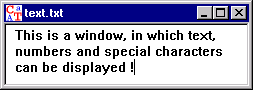

This window is used to display documents which consist of normal text (with no non-displayable special characters). Such a document can also be edited (see menu Edit).

Documents which contain non-displayable special characters are displayed in a window for hexadecimal inputs and outputs.
It is possible to force display of the window for hexadecimal inputs and outputs by selecting the menu option View \ As HexDump.
Remark:
The values (decimal and hexadecimal) of the different ASCII characters can be found in the ASCII table.